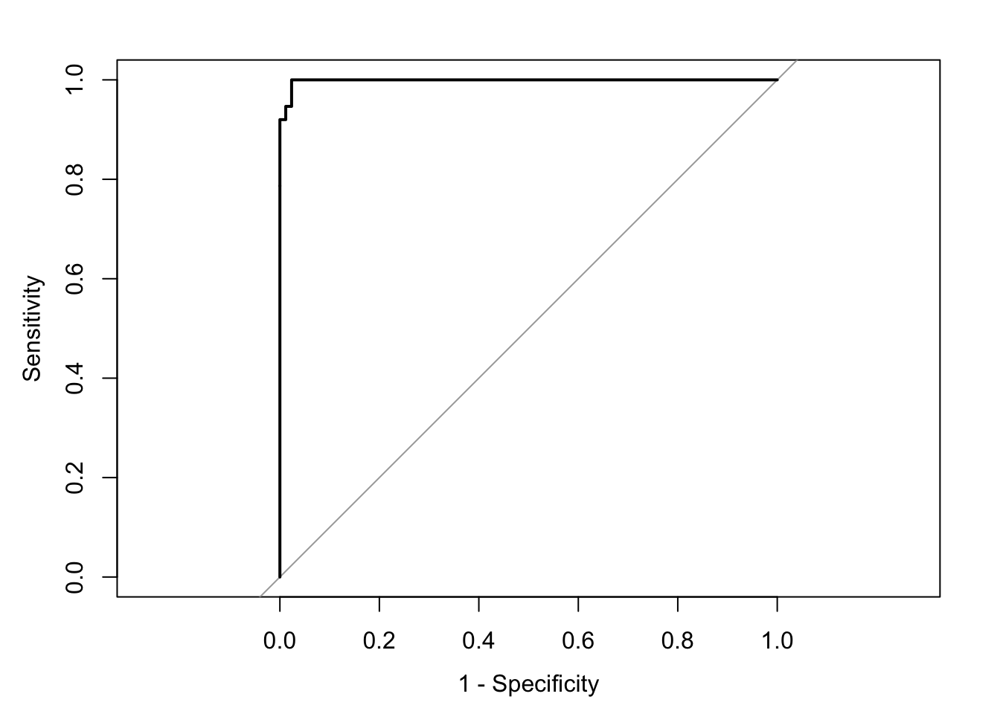
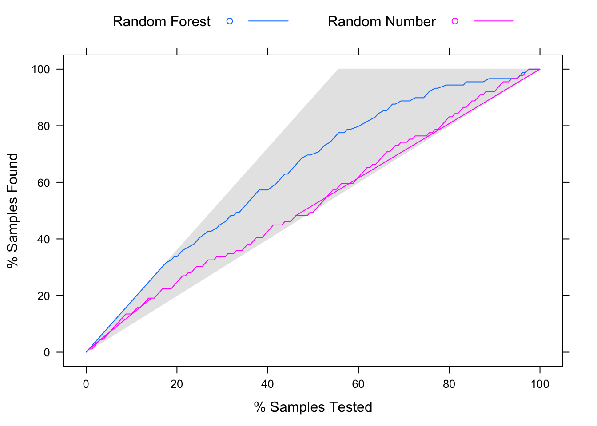

第8章 模型评估度量
当我们问哪个模型拟合效果好的时候我们到底在问什么？很多看似明确合理的问题一旦究其细节就会发现，其定义非常模糊以至于无法直接回答。这个问题的模糊之处在于没有指明用什么来衡量“拟合效果”？要比较模型首要任务是确定一个模型表现的度量，即通过什么标准来决定两个模型谁更好。模型表现的度量方法有好几种，要想更加全面的了解模型的表现，有时需要结合多种度量方式。这里我们只是单独介绍模型表现评估的度量，真正对度量的使用是建立在数据划分和再抽样的基础上的，也就是拟合模型和评估模型使用的数据集应该不同，否则得到的度量估计将过度乐观。
8.1 回归模型评估度量
接下来我们会依次介绍下面几种回归模型的表现度量方式：RMSE、校正\(R^2\)、\(C_{p}\)、AIC和BIC。
当因变量是数值时，我们可以使用均方误差平方根（Root mean squared error, RMSE）为指标衡量模型的表现。 这个度量是模型残差的函数，其中残差即为观测值减去模型的预测值。 均方误差（Mean squared error, MSE）的计算方法是将残差平方然后取平均， 而RMSE则是取MSE的平方根，从而它与原始数据的单位相同。
\[MSE=\frac{1}{n}\sum_{i=1}^{n}(y_{i}-\hat{y}_{i})^{2}\] \[RMSE=\sqrt{\frac{1}{n}\sum_{i=1}^{n}(y_{i}-\hat{y}_{i})^{2}}\]
得到的RMSE取值通常解释为残差离0的平均距离，或者解释为观测值和模型预测值之间平均的距离。回到之前介绍误差来源时用过的例子，对服装消费者数据中的收入（income）建立一般线性模型，将消费记录变量作为自变量，结果如下所示：
# 载入服装消费者数据
sim.dat<-read.csv("/Users/happyrabbit/Documents/GitHub/DataScientistR/Data/SegData.csv")
fit<-lm(income~store_exp+online_exp+store_trans+online_trans,data=sim.dat)
summary(fit)##
## Call:
## lm(formula = income ~ store_exp + online_exp + store_trans +
## online_trans, data = sim.dat)
##
## Residuals:
## Min 1Q Median 3Q Max
## -128768 -15804 441 13375 150945
##
## Coefficients:
## Estimate Std. Error t value Pr(>|t|)
## (Intercept) 85711.6796 3651.5991 23.472 < 2e-16 ***
## store_exp 3.1977 0.4754 6.726 3.28e-11 ***
## online_exp 8.9949 0.8943 10.058 < 2e-16 ***
## store_trans 4631.7507 436.4777 10.612 < 2e-16 ***
## online_trans -1451.1618 178.8355 -8.115 1.80e-15 ***
## ---
## Signif. codes: 0 '***' 0.001 '**' 0.01 '*' 0.05 '.' 0.1 ' ' 1
##
## Residual standard error: 31530 on 811 degrees of freedom
## (184 observations deleted due to missingness)
## Multiple R-squared: 0.6018, Adjusted R-squared: 0.5998
## F-statistic: 306.4 on 4 and 811 DF, p-value: < 2.2e-16拟合的线性模型fit的RMSE为3.15310^{4}（输出底部“Residual standard error:”后面的值）。
另一个常用的度量是R-Squared，通常写作\(R^2\)。它实际上是观测值和预测值的相关系数的平方。大家可能对线性回归中的\(R^2\)很熟悉，但它可以用于任何回归模型。通常解释成模型能够解释的应变量总变异的比例其中R-squared＝0.6 表示模型可以解释因变量总变异的四分之三。尽管这是一个易于解释的统计量，但要注意它是一种相关性而不是准确性的度量，它依赖于应变量方差。比如虽然fit的\(R^2\)不低，但是RMSE为0.6，说明预测的收入和真实收入之间的平均差距为3.15310^{4}，这样的精确度并不高。在应变量的取值很大时，即使>90%的\(R^2\)也不一定代表足够的精确度，在对公司的销售总额进行建模就常是这样的情况。之前我们在展示自变量和应变量误差对模型表现影响的时候有用过\(R^2\)，那时并没有考虑变量个数对\(R^2\)的影响（因为变量个数和观测个数相比并不多）。但事实上\(R^2\)会随着变量个数的增加而增大。校正\(R^2\)就是针对该问题对原\(R^2\)进行改进。原始\(R^2\)的定义为：
\[R^{2}=1-\frac{RSS}{TSS}\]
其中\(RSS=\sum_{i=1}^{n}(y_{i}-\hat{y_{i}})^{2}\)，\(TSS=\sum_{i=1}^{n}(y_{i}-\bar{y})^{2}\)。
由于RSS总是随着变量个数的增加而降低，\(R^2\)也就相应随着变量个数增加而增加。对于有\(p\)个变量的最小二乘模型，校正\(R^2\)定义为：
\[校正R^{2}=1-\frac{RSS/(n-p-1)}{TSS/(n-1)}\]
最大化\(校正R^{2}\)等同于最小化\(RSS/(n-p-1)\)。由于考虑了变量个数\(p\)，\(RSS/(n-p-1)\)随着变量个数的增加可能增加或者减少。\(校正R^{2}\)的直观想法是当模型中已经包含所有有用的变量后继续加入噪音变量只能略微降低\(RSS\)，由于变量个数增加，\(n-p-1\)增加进而整体\(RSS/(n-p-1)\)反而增加了，于是\(校正R^{2}\)会降低。因此，从理论上讲对应最大\(校正R^{2}\)的模型只包含有效变量而没有噪音变量。模型每加入一个噪音变量都会受到“惩罚”。
对于含有\(p\)个变量的最小二乘拟合模型，\(C_{p}\)的定义如下：
\[C_{p}=\frac{1}{n}(RSS+2p\hat{\sigma}^{2})\]
其中\(\hat{\sigma}^{2}\)是对模型随机项\(\epsilon\)的方差的估计。本质上\(C_{p}\)统计量就是在训练集的\(RSS\)上加上惩罚\(2p\hat{\sigma}^{2}\)，对基于训练集过度乐观的误差估计做出调整。很明显，当变量个数增加时，惩罚也随之加重，这可以抵消变量个数增加导致的\(RSS\)减小。用于模型选择时，我们选择对应\(C_{p}\)更小的模型。
AIC可以用于评估很多模型，它是基于最大似然值的。在线性回归的例子里，最大似然估计和最小二乘估计是一样的： \[AIC=n+nlog(2\pi)+nlog(RSS/n)+2(p+1)\]
BIC 也是基于最大似然值：
\[BIC=n+nlog(2\pi)+nlog(RSS/n)+log(n)(p+1)\]
R中的函数AIC()和BIC()就是按上面的公式分别计算AIC和BIC的。在很多教科书里通常会省略常数项\(n+nlog(2\pi)\)，且用\(p\)代替\(p+1\)。但不同的公式效果相同，因为使用时只考虑相对大小。和AIC相比，BIC对参数个数进行了更加严厉的惩罚。所以通过BIC选出的模型通常参数个数比AIC少。
模型评估和变量选择要求选取一个相应的选择标准，关于变量选择，在特征工程的章节中会详细介绍。
8.2 分类模型评估度量
本小节关注判别模型（即，应变量为分类变量）的表现度量。之前对连续型变量适用的RMSE和\(R^2\)不适用于分类模型。分类指对给定观测样本预测其所属类别，而且类别空间已知，所以是有监督学习。这个和聚类不同，聚类分析的目的是得到类别空间，是无监督学习，这在之后聚类和判别的部分还会更详细的介绍。通常遇到的问题是二分类，比如是否有某种疾病，垃圾邮件分类器等。也有多分类问题，比如服装消费数据中的消费者类别。这里我们用生猪疫情风险预测数据为例展示分类模型的评估度量。这里我们训练一个随机森林模型对农场疫情爆发概率进行评估，之后在树模型的章节中会对模型本身进行更详细的介绍。
library(dplyr)
library(randomForest)
library(caret)
library(readr)
# 读取数据
# 载入数据
disease_dat<-read.csv("/Users/happyrabbit/Documents/GitHub/DataScientistR/Data/sim1_da1.csv")
# 可以用glimpse()函数查看数据
# glimpse(disease_dat)AirlineRating
划分训练集和测试集，在训练集（xTrain和yTrain）上得到模型，然后在测试集（xTest和yTest）上评估模型表现。70%的样本用于训练，剩下30%用于模型评估：
# 划分训练集和测试集
set.seed(2016)
trainIndex<-createDataPartition(disease_dat$y,p=0.8,list=F,times=1)
xTrain<-disease_dat[trainIndex,]%>%select(-y)
xTest<-disease_dat[-trainIndex,]%>%select(-y)
# 需要将应变量转化成因子类型
yTrain<-disease_dat$y[trainIndex]%>%as.factor()
yTest<-disease_dat$y[-trainIndex]%>%as.factor()训练随机森林模型：
train_rf<-randomForest(yTrain~.,data=xTrain,mtry=trunc(sqrt(ncol(xTrain)-1)),ntree=1000,importance=T)为了展示不同的模型评估法则，我们将训练得到的随机森林模型应用到测试集，得到两种预测：
- 每个类别的概率预测（结果为0到1之间的连续值，可以通过在代码中添加选项
prob得到预测，结果存在yhatprob对象中） - 离散类别预测（结果为0/1形式，存在
yhat对象中）
我们分别看看这两个预测结果：
yhatprob<-predict(train_rf,xTest,"prob")
set.seed(100)
car::some(yhatprob)## 0 1
## 45 0.592 0.408
## 158 0.455 0.545
## 255 0.575 0.425
## 291 0.513 0.487
## 314 0.620 0.380
## 392 0.538 0.462
## 402 0.472 0.528
## 443 0.542 0.458
## 462 0.620 0.380
## 626 0.586 0.414yhat<-predict(train_rf,xTest)
car::some(yhat)## 206 273 305 348 519 524 525 599 701 780
## 1 0 0 0 0 0 0 0 1 0
## Levels: 0 1现在我们就用上面的两种预测结果为例介绍不同的预测类评估方法。
8.2.1 Kappa统计量
混淆矩阵（Confusion Matrix）是对分类结果进行详细描述的一个表，是简单的观测类和预测类的交叉表。在此例中，观测类是yTest，预测类是yhat，相应的混淆矩阵为：
table(yhat,yTest)## yTest
## yhat 0 1
## 0 68 56
## 1 3 33表格中左上角和右下角分别代表预测正确的样本数目，左下角和右上角代表错误预测的样本数目。更一般的二分类混淆矩阵如下：
| 观测发生 | 观测不发生 | |
|---|---|---|
| 预测发生 | TP | FP |
| 预测不发生 | FN | TN |
其中TP代表真阳性，FP代表假阳性，TN代表真阴性，FN代表假阴性。表格左上到右下对角线上的元素表示正确预测的样本数目，另一个方向的对角线上的元素代表误判的样本数。评估类预测最简单的指标是总体精确率，即预测正确的总体样本比例:
\[总体精确率=\frac{TP+TN}{TP+TN+FP+FN}\]
对类别数目大于2的情况，可以类似计算总体精确率。该统计量很直观，但有一些缺点，首先总体精确率没有区分错误类型。实际应用中，不同错误对应的损失可能不同，这时就无法用总体精确率衡量模型。 比如过滤垃圾邮件，误删一封重要的邮件带来的损失要高于收到一封垃圾邮件的损失。Provost等人(Provost F 1998)深入讨论了用精确率来比较不同的分类器存在的问题。其次总体精确率没有考虑真实频率。比如在保险风险分析中，有风险的概率可能只有千分之一或者更小，模型只要将所有样本都清一色判定为无风险就能达到几乎完美的精确率。有时我们将不用模型也能得到的精确率称为无信息率。这里将所有样本判定为无风险得到的无信息率至少是99.9%。在这种情况下模型的精确率需要高于无信息率才算合理。
还有一种一致性检验方法叫做Kappa统计量，最早由Cohen等人在1960年提出用于考察两个不同的诊断方法在结果上是否具有一致性(J 1960)。Kappa考虑到简单由偶然情况产生的准确性。具体公式如下：
\[Kappa=\frac{P_{0}+P_{e}}{1-P_{e}}\]
假设\(n=TP+TN+FP+FN\)为总体样本数，其中\(P_{0}=\frac{TP+TN}{n}\)为实际预测一致率，\(P_{e}=\frac{(TP+FP)(TP+FN)+(FN+TN)(FP+TN)}{n^{2}}\)为由简单偶然情况产生的一致率。Kappa取值从-1到1，值越高一致性越强。
- Kappa = 1 时，表明完全一致。
- Kappa = 0 时，则一致性与偶然预期的相同。
- Kappa < 0 时，一致性比偶然预期的还要弱，不过这种情况很少发生。
一般说来，Kappa值在0.3到0.5之间代表合理的一致性。假定一个模型的精确度很高（90%），但偶然预期的精确度也很高（85%），Kappa统计量为\(\frac{1}{3}\)，表明预测和观测适度一致。Kappa统计量也可以扩展至评估类别大于2的情形。fmsb包中的Kappa.test()函数能用于计算Cohen的Kappa统计量。该函数还能对Kappa统计量进行统计检验，并且给出置信区间。以上面观测类yTest和预测类yhat结果为例，可以通过如下代码计算Kappa统计量：
kt<-fmsb::Kappa.test(table(yhat,yTest))
# 统计量估值在函数返回值的Result对象中
kt$Result$estimate## [1] 0.3054738上面函数返回结果中包含一个Judgement对象:
kt$Judgement## [1] "Fair agreement"这是基于Landis和Koch提出的Kappa统计量的一般性解释方法(Landis JR 1977)：
- Kappa< 0：无一致性（No agreement）
- Kappa在0-0.2之间：略微一致（Slignt agreement）
- Kappa在0.2-0.4之间：轻度一致（Fair agreement）
- Kappa在0.4-0.6之间：适度一致（Moderate agreement）
- Kappa在0.6-0.8之间：强一致（Substantial agreement）
- Kappa在0.8-1.0之间：几乎完全一致（Almost perfect agreement）
8.2.2 ROC曲线
相对与简单的类取值，类概率中含有更多的模型预测信息，比如之前得到的yhatprob就是连续的预测值。对于这样的预测结果，ROC曲线是一个通用评估方法。该方法确定一个有效的阈值，超过这个阈值的观测被标注为某类。比如所有yhatprob>0.9的样本都判定为风格类。ROC曲线是基于灵敏度和特异度这两个统计量。考虑之前展示的二分类情况的混淆矩阵。模型的灵敏度为在所有真实观测到“发生”的样本中被准确预测为“发生”的比率：
\[灵敏度=\frac{正确预测为“发生”的样本数目}{观测到“发生”的样本数目}=\frac{TP}{TP+FN}\]
特异度指的是观测到“不发生”的样本中准确预测为“不发生”的比率：
\[特异度=\frac{正确预测为“不发生”的样本数目}{观测到“不发生”的样本数目}=\frac{TN}{TN+FP}\]
灵敏度也称为真阳性率，特异度也称为真阴性率。“1-特异度”为假阳性率。灵敏度和特异度对应的分母是固定的，当模型将更多样本判定为“发生”时，对应的灵敏度会增加，特异度会降低。根据不同错误类型导致的损失，通常需要建模者在灵敏度和特异度之间做出权衡。ROC曲线是权衡这二者的一个有效工具。ROC曲线是通过设定一系列预测结果阈值，得到相应的真阳性率（灵敏度）和假阳性率（1-特异度）绘制成的曲线。我们得到的关于农场疫情爆发预测概率结果yhatprob为例，展示如何用rROC包中的相应函数得到ROC曲线和相关统计量。yhatprob中的第2列代表将样本判定为疫情爆发的概率，其两列相加和为1。我们可以使用函数roc()得到相应的ROC对象rocCurve。然后将不同的函数应用在该对象上得到相应的图形结果或者统计量。下面的代码可以用来得到ROC曲线：
library(pROC)
rocCurve<-roc(response=yTest,predictor=yhatprob[,2])
plot(rocCurve,legacy.axes=T)
##
## Call:
## roc.default(response = yTest, predictor = yhatprob[, 2])
##
## Data: yhatprob[, 2] in 71 controls (yTest 0) < 89 cases (yTest 1).
## Area under the curve: 0.8083其中roc()函数中的第一个参数response是真实观测值，predictor是连续预测结果，这里赋予的是判定为爆发的预测概率。ROC曲线的横坐标是1-特异度，纵坐标是灵敏度。一个完美的模型能完全区分两个类，灵敏度和特异度均为100%。从图形上看，ROC曲线为通过(0,0)和(1,1)的曲线。完美模型对应的曲线还通过(0,1)点，对应的曲线下面积为1。完全无效的模型对应的曲线趋近于45度对角线，曲线下面积为0.5。可以将不同模型结果对应的ROC曲线放在一张图中，直观对比模型效果。或者通过曲线下面积（AUC）量化比较模型，对应面积越大的模型越有效。DeLong等提出了基于U统计量的估计和比较AUC的方法(E.R. DeLong 1988)，也可以通过bootstrap得到AUC的置信区间(Hall P 2004)。
在R中，我们可以通过如下代码得到基于DeLong提出的非参方法得到的AUC的估计和置信区间：
# 得到AUC的估计
auc(rocCurve)## Area under the curve: 0.8083# DeLong方法得到的AUC置信区间
ci.auc(rocCurve)## 95% CI: 0.7419-0.8746 (DeLong)ROC曲线和线下面积AUC是我最常用的评估分类模型的方式，由于它是灵敏度和特异度的函数，对类失衡有抗性(Provost F 1998; T 2006)。用AUC和其它单一度量类似，在用某个量总结曲线时会带来信息的损失，因为很可能没有某条曲线一致好于其它的曲线（曲线交叉）。如果我们对曲线特定的区域感兴趣，可以直接比较曲线。如果我们关心的是ROC曲线低的一端，可以使用ROC曲线下局部面积度量(D 1989)，该度量关注曲线特定部分。ROC曲线主要针对二分类定义，但之后不同人将其扩展到多分类的情况(Hand D 2001; Lachiche N 2003; Li J 2008)。
8.2.3 提升图
除了数值度量以外，还有一些对分类结果评估的可视化工具，如提升图。提升图以图形的形式表示模型预测比随机预测相比带来的改进，根据“提升”分数来选择模型，或者确定应该将数据中多大比例的样本视为目标群体可以从模型预测结果中获益。这样抽象的描述很难让大家理解提升图。因此我们将其放在应用的语境下。我们用猪场疫情数据为例。之前我们在训练集上训练随机森林模型，然后将模型应用在含有160个样本的测试集（xTest）上。我们对测试集样本的预测yhatprob来解释提升图。由于我们感兴趣的是疫情爆发的事件——yhatprob第二列（第一列是无疫情的概率）——我们将针对疫情爆发的连续概率预测存在一个新对象modelscore中。真实情况是有89个样本有疫情。如果我们将这160个样本按照模型预测分值modelscore从高到低排序，对于完美的模型，排序后的前89个样本应该正好就是那些疫情爆发的样本。当预测完全随机时，排序后前x％的样本中根据随机概率也该正好含有89个发生疫情的样本中的x％。提升图展示了通过模型预测排序筛选出的样本比随机样本对应目标类命中率的差别。
下面我们抽取了一些随机分值（randomscore），对其和模型预测结果（modelscore）绘制提升图，比较它们。
modelscore<-yhatprob[,2]
# 随机抽取一些分值
randomscore<-rnorm(length(yTest))
labs<-c(modelscore="Random Forest",
randomscore="Random Number")我们可以使用caret包中的lift()函数来绘制提升曲线。该函数用一个公式作为输入选项，公式左侧是真实类别，公式右侧是多个预测值。这里公式右侧是模型分值和随机分值：
liftCurve<-lift(yTest~modelscore+randomscore,class="1",labels=labs)为了绘制多条提升图，使用lattice包中的xyplot()函数：
xyplot(liftCurve,auto.key=list(columns=2,lines=T,points=F))
提升图的横轴是累计样本百分比，纵轴是累计获取的目标类样本百分比。比如随机森林模型提升曲线上的点(6.25,11.24)表示：按照模型预测分值从高到低排序后的前6.25%的样本中含有160个疫情爆发样本中的0.1123596。和ROC曲线类似，我们可以通过比较不同模型的提升图来选择模型，曲线下面积也可作为模型效果的度量。此外我们也可能对曲线的某一部分特别感兴趣。比如在当前的例子中，如果判定一个农场在未来5年内可能爆发疫情，那么通常的措施是对该农场进行大规模的清洗消毒，这样的措施花费很高。假设我们只能对50%的农场进行清理，那么就该选择对应横坐标为50%，疫情爆发样本命中率最高的模型。在这个应用场景下，在支出预算一定时最大化效率。
8.3 本章总结
本章探讨了模型评估的度量。在数据分析项目中，评估模型是非常重要的。掌握本章和上一章介绍的数据划分和再抽样技术就具备评估模型的技术能力了。这里关于分类模型评估有一个重要话题由于篇幅所限没有介绍，就是预测概率校准和处理类失衡的问题。对此话题感兴趣的读者可以参考Max Kuhn 和 Kjell Johnston的书《Applied Predictive Modeling》中的第11章(Max Kuhn 2013)，这本书的中文版已于2016年5月由电子工业出版社出版。模型选择和评估要求分析师将模型放在具体项目语境下。这是体现科学和艺术结合的典型环节。我们在本书之后讲具体模型的时候会给出几个完整的案例分析，其中包括用之前讲到的这些建模技术进行模型选择。关于模型评估还要提两点：
尝试尽可能多的模型
当考虑该用什么模型解决某具体的问题时，应该考虑多个可能的模型。从最简单的模型开始直到你能达到的难度上限。真正尝试拟合模型时，根据个人喜好，你可以从最简单的模型开始，每拟合一次模型，对数据中变量关系的理解会有所加深，慢慢过渡到更加复杂的模型。或者从最复杂的模型开始，但要做好简化模型的准备，使得模型具有更强的解释性。实际应用中，你不知道什么模型对当前问题最有效，所以比较不同的模型对于一个合格的数据科学家来说是必须的。当然，这有一个隐藏的前提条件是你能够快速有效的拟合不同模型。如果你需要让计算机跑1个晚上的程序来拟合一个模型，尝试这样的模型不是一个好主意。
检查模型的稳定性
提高模型稳定性有各种可能的方法，收集更多的观测，除去冗余变量，如之前提到的近0方差变量和高度相关变量。检查模型拟合的稳定程度最常用的方法是再抽样。通过抽取不同的样本拟合相同的模型，然后查看拟合参数的变化范围。要是需要检查模型在某假设条件不满足的情况下的表现，可以通过模拟数据进行考察。
最后我想用George Box的那句统计学界家喻户晓的名言结束这一章：
所有模型都是错的，但其中有一些是有用的。(All models are wrong, but some are useful.)
References
Provost F, Kohavi R, Fawcett T. 1998. “The Case Against Accuracy Esti- Mation for Comparing Induction Algorithms.” Proceedings of the Fifteenth International Conference on Machine Learning, 445–53.
J, Cohen. 1960. “A Coefficient of Agreement for Nominal Data.” Educational and Psychological Measurement 20: 37–46.
Landis JR, Koch GG. 1977. “The Measurement of Observer Agreement for Categorical Data.” Biometrics 33: 159–74.
E.R. DeLong, D.L. Clarke-Pearson, D.M. DeLong. 1988. “Comparing the Areas Under Two or More Correlated Receiver Operating Characteristics Curves: A Nonparametric Approach.” Biometrics 44: 837–45.
Hall P, Fan Y, Hyndman R. 2004. “Nonparametric Confidence Intervals for Receiver Operating Characteristic Curves.” Biometrika 91: 743–50.
T, Fawcett. 2006. “An Introduction to ROC Analysis.” Pattern Recognition Letters 27 (8): 861–74.
D, McClish. 1989. “Analyzing a Portion of the ROC Curve.” Medical Decision Making 9: 190–95.
Hand D, Till R. 2001. “A Simple Generalisation of the Area Under the ROC Curve for Multiple Class Classification Problems.” Machine Learning 45 (2): 171–86.
Lachiche N, Flach P. 2003. “Improving Accuracy and Cost of Two–Class and Multi–Class Probabilistic Classifiers Using ROC Curves.” In ``Proceed- Ings of the Twentieth International Conference on Machine Learning 20 (416–424).
Li J, Fine JP. 2008. “ROC Analysis with Multiple Classes and Multiple Tests: Methodology and Its Application in Microarray Studies.” Biostatistics 9 (3): 566–76.
Max Kuhn, Kjell Johnston. 2013. Applied Predictive Modeling. Springer.